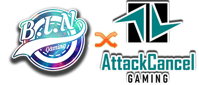

TL;DR: A long time ago a dude started hosting video game tournaments in New York City.
Attack Cancel started out as BIN. Best in New York City Official Tournament (BIN) was founded in 1999 by Cello, he wanted to hold a casual video game tournament with the original Super Smash Bros on Nintendo 64. Twenty three years later, we are still on the scene!
The follow up to our original tournament was our first ever Super Smash Bros. Melee Tournament on the Nintendo GameCube in the summer of 2002. We held 3 more Smash Bros. tournaments up until 2005. These tournaments/events saw people traveling from all over the United States to attend and were spoken highly of on gaming forums such as SmashBoards and GameFaqs. BIN and other small tournaments were the foundations for the massive eSports scene we know and love today.
BIN slowly faded away after the last 2005 tournament as various members shifted focus towards college and other aspects of their lives. While BIN was gone many of the original participants still kept on gaming and some garnered fame via gaming and other avenues of their lives. Cello the founder of BIN always wanted to bring the Best in New York tournaments back but couldn’t ever find the right time and venue.
Fast forward 14 years to January of 2019, Cello was working with a local beer brewery and pitched the idea of holding a Mario Kart tournament at one of their locations, while reluctant at first the owner eventually agreed. The Mario Kart 8 Deluxe tournament was a testing ground for any renewed interest and the tournament was a huge success helping the location rake in some serious sales numbers.
Cello officially decided to bring the BIN Tournaments back!
After recruiting a few local sponsors, The Boogie Down Grind Café, Ski the Bronx and Gun Hill Brewery, we decided to follow up with a Double Elimination Super Smash Bros. Ultimate tournament in April of 2019. Following the success of the Ultimate tournament we went ahead with a smaller Single Elimination Ultimate tournament to gather data/interest and form a plan for monthly events.
Each tournament was slowly gaining ground and bringing people to the local bar/brewery that had no idea the location existed. For the next tournament BIN decided to step away from the Nintendo focused games and determined the next best title for a tournament was none other than the legend itself, Street Fighter! In July of 2019 BIN had its first ever Ultra Street Fighter II tournament!
We were gearing up for a Mortal Kombat or Tekken tournament for the fall of 2019 but the ownership of our venue changed hands and there seemed to be little to no interest in continuing the tournaments by the new ownership. Not to be deterred, Cello set out to find another location to keep the momentum going, this was tough as it was the end of the year and by the time March rolled around, NYC and the country as whole started to shut down due to Covid-19. This further complicated things as any location we could possibly find would have extreme limits on it due to social distancing which is tough to do when you have in person tournaments, they’re geared like any sports venue, with a large amount of people involved.
Fast forward to August of 2020 we decided to take our BIN tournaments online! BIN held its first ever online tournament in “Quaran-Teams” a team based Smash Bros. Ultimate tournament, with this new digital venue came new participants. We had players from the local scene in NYC but also expanded out across the United States as well as the United Kingdom and the Netherlands. “Quaran-Teams” exceeded the expectations we had of this online endeavor as everything flowed smoothly and was streamed live via Cello’s Twitch channel.
Now that the online arena proved viable for us we held our “One Last Dance” Smash Bros. Ultimate singles tournament on December 27th to close out 2020. 2021 saw Cello's family grow so he tabled the eSports events for a short period and now we are anxiously looking forward to even greater success with our future events!